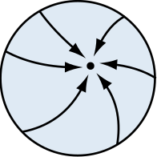

I don’t like the default (arrow) markers bundled with Inkscape, so I
made an arrow called “Arrow0”1 following this video
(example image on the right). To use Arrow0, merge the SVG snippet below
with the global markers file. To use this with the Inkscape AppImage,
first extract the AppImage using --appimage-extract and
locate the markers.svg file under
squashfs-root. Repackage with appimagetool if required.
<!--
Merge with the global markers.svg located at:
/usr/share/inkscape/markers/markers.svg (GNU/Linux)
...\Program Files\Inkscape\share\markers (Windows)
-->
<marker
style="overflow:visible"
id="Arrow0"
refX="0"
refY="0"
orient="auto-start-reverse"
inkscape:stockid="Arrow0"
markerWidth="1"
markerHeight="1"
viewBox="0 0 1 1">
<path
style="fill:context-stroke;fill-rule:evenodd;stroke:none"
transform="scale(1.0) translate(0,0) rotate(180)"
id="arrow0"
d="m4.16 2.49c-2.7-1.29-5.5-1.98-8.33-2.49 2.83-0.514 5.63-1.21 8.33-2.49z"/>
</marker>Inkscape’s default solid arrows are labelled Arrow1, Arrow2, etc.↩︎
Last updated: 2022-06-28 12:00 EDT